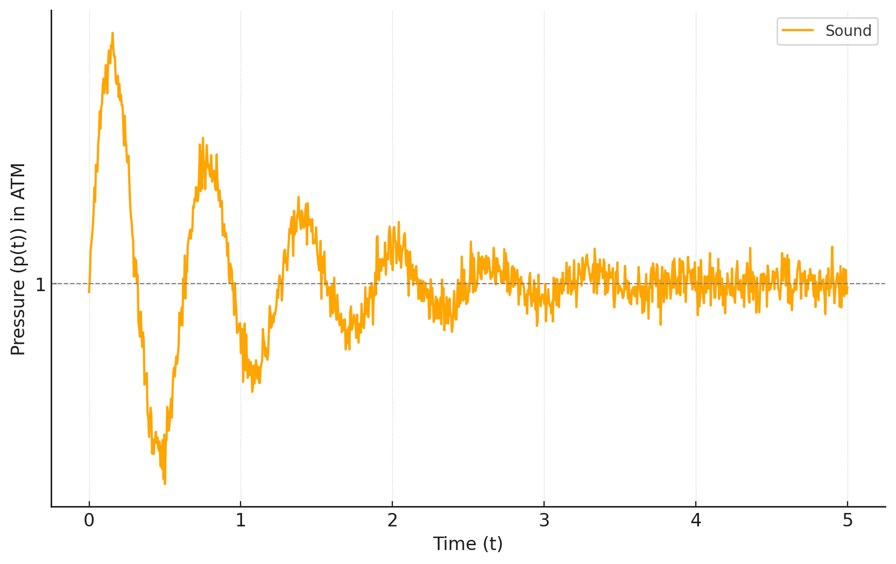
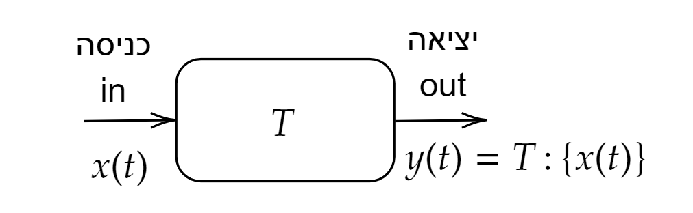
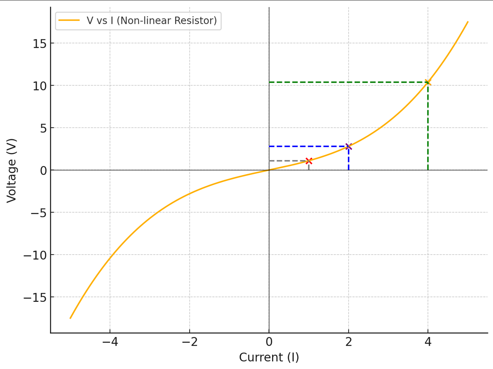
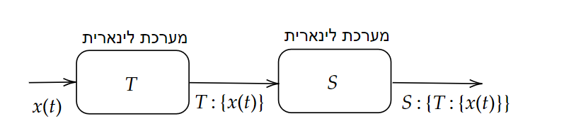
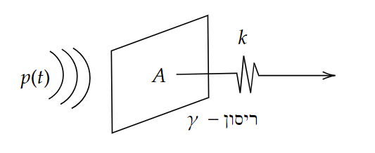
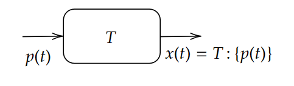

מערכות לינאריות#
מוטיבציה#
הרבה מערכות פיזיקליות הן לינאריות (לפחות בקירוב טוב)
התגובה לאות מורכב ע”י סכום תגובות לאותות פשוטים
מתמטיקה אלגנטית (אלגברה לינארית)
שרשור מערכות לינאריות היא מערכת לינארית
הגדרות#
אות (סיגנל)#
פונקציה מתמטית המעבירה אינפורמציה אודות התנהגות של תופעה מסויימת
דוגמאות:
\(p(t)\) לחץ כפונקציה של זמן - כלומר אות אקוסטי 
\(V(t)\) מתח כפונקציה של זמן
\(I(t)\) זרם כפונקציה של זמן
\(T(t)\) טמפרטורה כפונקציה של זמן
מערכת#
תהליך \(T\) שיוצר טרנפורמציה מאות נתון לאות אחר
נסמן:
 למשל: מיקרופון היא מערכת שמירה לחץ למתח/זרם חשמלי
מערכת לינארית#
מערכת לינארית \(T\) במרחב האותות היא מערכת המקבלת אות \(x\left(t\right)\) בכניסה ומחזירה אות ביציאה \(y\left(t\right)=T:\left\{ x\left(t\right)\right\} \) כאשר הטרנספורמציה \(T\) מקיינת את עקרון הלינאריות (או סופור פוזיציה) כלומר בהינתן אות מהצורה \(x\left(t\right)=\alpha x_{1}\left(t\right)+\beta x_{2}\left(t\right)\) האות במוצא המערכת הלינארית יהיה הצירוף הלינארי של מוצא המערכת עבור כל אחד מהאותות בנפרד כלומר:
חשוב לציין שהתכונה הזו מאוד עוזרת לנו משום שאנחנו יכולים בתקווה לקחת אות מורכב \(x\left(t\right)\) ולכתוב אותו כחיבור של אותות פשוטים
דוגמא למערכת לא לינארית#
ניקח את המערכת הכי פשוטה שאנחנו יכולים לחשוב עליה. מדידת מטח על נגד שזורם בו זרם כמו שנלמד בקורס בחשמל, ניתן לתאר את הנגד באמצעות מספר אחר \(R\) שמסמן את ההתנגדות שלו. תחת המודל המקורב הזה ניתן לרשום את חוק אוהם:
או כמו שמסמנים בקורס:
כלומר הנגד הוא מערכת לינארית לממירה זרם למתח.
אבל כמו כל מודל גם חוק אום נכון רק בקירוב. אם לוקחים נגד אמיתי ומודדים אותו מגלים שבזרמים גדולים “ההתנגדות” משתנה. אנחנו כל כך רגילים לחשוב על נגד בתור רכיב עם התנגדות שאנחנו מוכנים לחשוב על מודל בו “ההתנגדות משתנה”. כלומר השיפוע של הגרף \(V\left(I\right)\) משתנה הקשר בין הזרם למטח יכול להראות לדוגמא ככה  מכאן ניתן לראות שאם לדוגמא אנחנו מזרימים זרם \(I_{1}\left(t\right)=1\) וזרם \(I_{2}\left(t\right)=2\) המערכת כבר לא לינארית כלומר שאם ניקח לדוגמה את הקומבינציה \(I\left(t\right)=2I_{1}\left(t\right)+I_{2}\left(t\right)=4\) היינו מצפים לקבל מטח:
אך אנחנו רואים מהגרף שהתגובה היא חזקה בהרבה יותר למה זה בכל זאת שימושי לנו לדבר על מערכות לינאריות? כי הרבה מערכות הן בקירוב טוב לינאריות וגם כאן במערכת של הגנד אם היינו מגבילים את עצמנו לזרמים נמוכים היינו יכולים להתייחס למערכת כלינארית
שרשור מערכות לינאריות (היא מערכת לינארית)#
 נניח שיש לנו שתי מערכות \(T\) ו\(S\). האם גם המערכת הכוללת היא לינארית? קל לחשב:
\( \blacksquare\)
דוגגמא: ממברנה של מיקרופון#
בפועל כדי באמת להבין מה קורה צריך לפתור את משוואת הגלים על הממברנה ביחד עם תנאי שפה ואילוץ של האוויר. אבל אנחנו ניקח מודל פשטני  כלומר יש גל לחץ שפוגע בממברנה והיא מתחילה להתנדנד לממברנה יש “קשיחות” או “מתיחות” שאותה נסמן ב\(k\) את שטח הממברנה נסמן ב\(A\) ואת קבוע הדאיכה של התנודות ב\(\gamma\) נוכל לרשום את החוק השני של ניוטון:
כלומר קיבלנו מערכת  אשר הקלט שלה הוא \(p\left(t\right)\) והפלט שלה הוא \(x\left(t\right)\) כדי למצוא את \(x\left(t\right)\) צריך לפתור משוואה דיפרנציאלית. אבל כדי להראות שהיא לינארית אנחנו לא צריכים לדעת לפתור משוואות דיפרנציאליות אלא רק להראות שהיא מקיימת את תכונת הלינאריות. נניח שיש לנו שני קלטים \(p_{1}\left(t\right)\) ו\(p_{2}\left(t\right)\) עבור \(p_{1}\left(t\right)\) המערכת מוציאה \(x_{1}\left(t\right)\) שמקיים
עבור \(p_{2}\left(t\right)\) המערכת מוציאה \(x_{2}\left(t\right)\) שמקיים
נניח שתנאי ההתחלה שלנו זה שהממברנה במנוחה כלומר
זה פתרון שנקרא ZSR (Zero State Response) כלומר שאין אנרגיה אגורה במערכת בזמן ההתחלה כעת נציב:
ונקבל:
כלומר שאם נגדיר אות מהצורה \(\alpha x_{1}+\beta x_{2}\) נגלה שהוא מקיים את המשוואה הדיפרנציאלית עבור קלט של \(p\left(t\right)\) זה אומר בשפה שלנו ש:
כלומר המערכת לינארית!
דוגמאות נוספות#
מעגלי RLC (נלמד בהמשך הקורס)
התפשטות גלים (גם אקוסטים וגם אלקטרומגנטים). טוב לפחות נכון בקירוב
אנטנות
פילטרים, מגברים
בולמי זעזועים